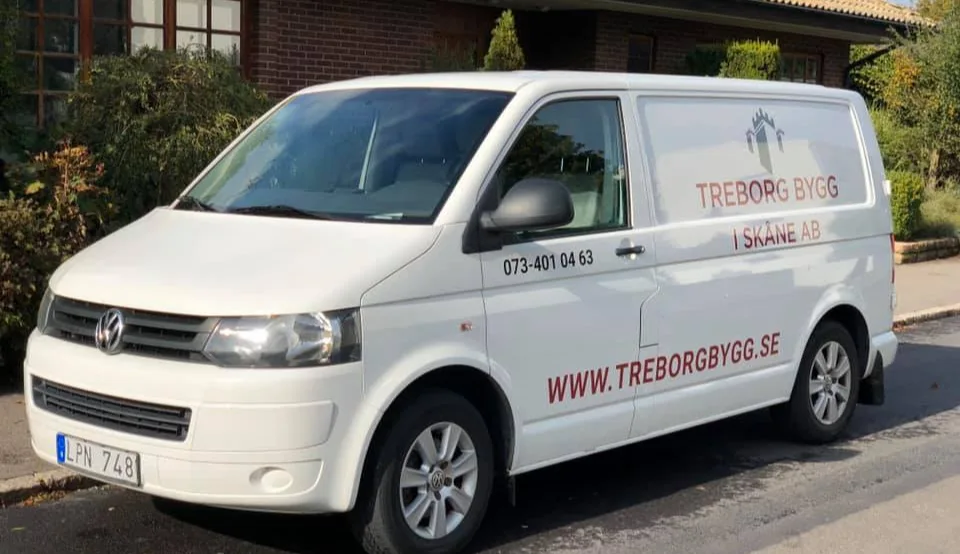

Vi är Treborg Bygg.
Ett byggföretag i Trelleborg med uppdrag i hela Skåne, sedan 2017.
Från mindre arbeten till hela byggen.
Vi arbetar med renoveringar, målning och tak, men också med tillbyggnad, nybyggnation, poolbyggen, kök och badrum. Våra kunder är både privatpersoner och företag.
Vi vill att det ska vara enkelt att följa arbetet. Därför lägger vi vikt vid tydlig kommunikation, planering och raka besked.
Erfarenhet från olika typer av uppdrag.
Vi har genomfört uppdrag åt Peab och Veidekke. Bland projekten finns kontoren i The Edge i Hyllie och den nya domstolen i Malmö, där vi arbetade på uppdrag av Peab.
För privatkunder har vi bland annat renoverat hem, kök och badrum samt byggt pooler och utemiljöer. Vi samarbetar även med målerifirmor, VVS och elektriker som vi känner sedan länge.
Se våra arbeten
Kundernas rekommendationer
rekommenderar oss på Facebook
Baserat på 7 recensioner.
Kontrollerat 19 november 2026.
”Blev mycket nöjd och det bästa var att dom blev klara i tid”
Haidar Ali Rekommendation på Facebook, 23 oktober 2019. Utdrag.